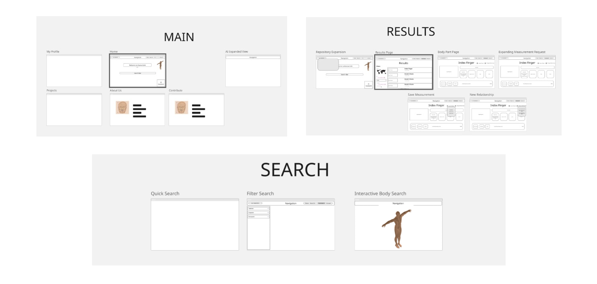

02 →
Designing the System
USER NEEDS → PRODUCT REQUIREMENTS
We translated research into system requirements, including:
- Multi-mode search engine
- AI assistant support
- Minimal, no-training-required interface
- Compliance with standards
- Visualizations + statistics
INFORMATION ARCHITECTURE
Why IA mattered most
Stakeholders needed a clear system blueprint before high-fidelity visuals, so IA became a primary deliverable.
This resulted in 4 IA iterations with improved structure and readability.
- Individual IA drafts
- Team consolidation in FigJam
- Expert review
- Stakeholder refinement

WIREFRAMES
Low-fidelity wireframes helped validate flows before MVP development.
